Augmenter le TR par pas de 50 et observer les changements sur l’image , le signal sur bruit (S/B), le temps d’acquisition et le nombre de coupes autorisé par TR

Le paramètre TF/ETL est le nombre d'échos recueillis dans le même cycle de répétition (temps TR).
Il s'agit d'une mesure d'accélération du temps d’acquisition, par exemple, pour un facteur turbo 3,
le temps d’acquisition est divisé par 3 par rapport à une séquence SE avec des paramètres comparables.
Ainsi, en augmentant votre facteur TF/ETL, vous pouvez réduire le temps d'acquisition.
Attention : vous devrez peut-être ajuster d'autres paramètres pour garantir une bonne optimisation.